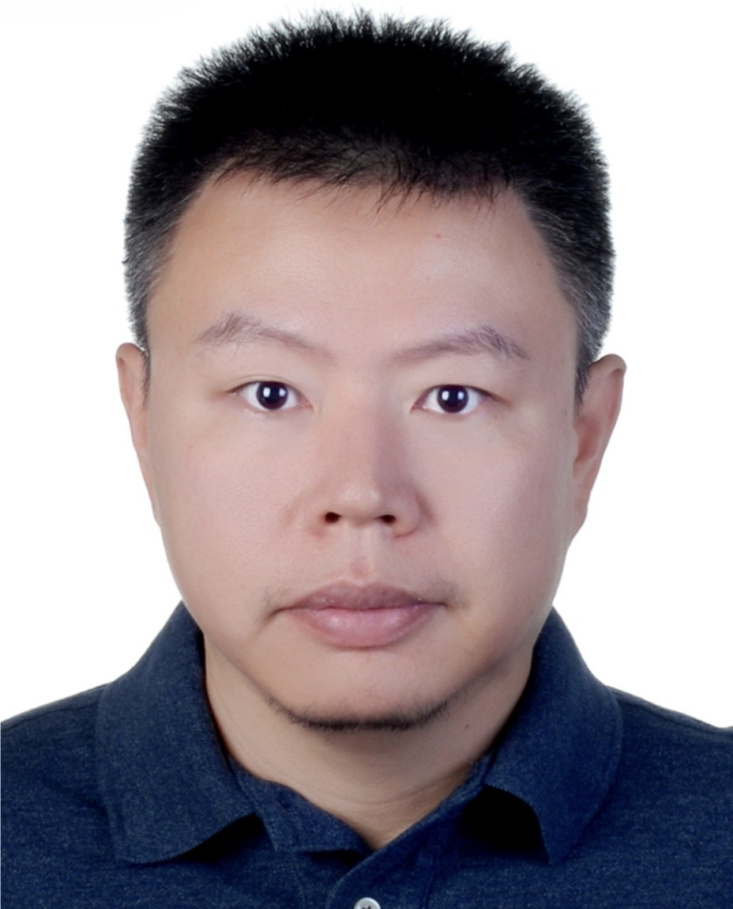

Vehicle software & systems
C++ development, E/E integration, ADAS, OTA integration and LabCar environments. Connecting software, system architecture and vehicle engineering.
AUTOMOTIVE DEVELOPMENT · CHINA & GERMANY
Head of Virtual Integration / CARIAD China
I lead teams developing vehicle software integration capabilities, simulation environments and AI-driven engineering platforms — bringing vehicle functions together earlier in the development cycle.

* In selected autonomous-driving localization and integration-testing workflows.
01 / EXPERTISE
C++ development, E/E integration, ADAS, OTA integration and LabCar environments. Connecting software, system architecture and vehicle engineering.
Simulation architecture, sensor and data-injection models, SiL/MiL/HiL environments and whole-vehicle virtualization concepts.
Applied AI, engineering automation and cloud data closed loops. Turning development bottlenecks into scalable tools and workflows.
Technical roadmaps, organization development, stakeholder alignment and supplier collaboration across China and Germany.
02 / EXPERIENCE
Lead the development of virtual integration capabilities spanning E/E systems, LabCar, ADAS simulation, OTA integration and cloud data platforms.
Led customer-facing ADAS integration across simulation, hardware and vehicle environments.
Product Owner for a virtual-development platform, coordinating 15 developers building simulation and test-system capabilities.
03 / PERSONAL PROJECTS
Hands-on vibe coding: I use AI coding assistants to develop personal projects, combining rapid iteration with requirements, architecture, code review and verification.
DATA ENGINEERING · AUTOMOTIVE
A research system for collecting public incident reports, preserving source evidence, removing duplicates and supporting structured human review.
Node.js and SQLite pipeline, filterable dashboard, incremental collection and relevance filtering informed by community votes. Reports remain leads until verified.
AI AGENTS · PERSONAL DATA
A personal data platform in development, designed to apply reusable expertise to validated datasets through the user's chosen AI model.
Initial focus: Garmin FIT data. Implemented components cover deterministic preparation, owner-scoped storage and metric history. A defined AI agent team supports requirements, implementation, review and quality management.
WEBGL · INTERACTIVE EXPERIENCES
A browser-based voxel game developed for Florenz and Marlene, with building, arena combat and world observation modes.
WebGL2 rendering, procedural worlds, touch and gamepad controls, plus a Node.js family LAN server with separate profiles, saved worlds and approved building visits. Development branch; hosted locally for family play.
04 / FOUNDATIONS
University of Bonn, Germany · 2004–2012
Equivalent to Master of Computer Science
Focus: Artificial Intelligence and Software Engineering.
Thesis: simulation of human attention using symmetry and contrast features.
VW Group Worldwide Leadership License / ACL Certificate
LET'S CONNECT